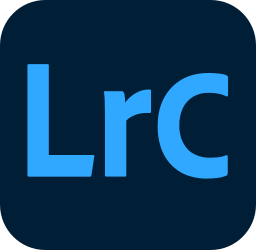
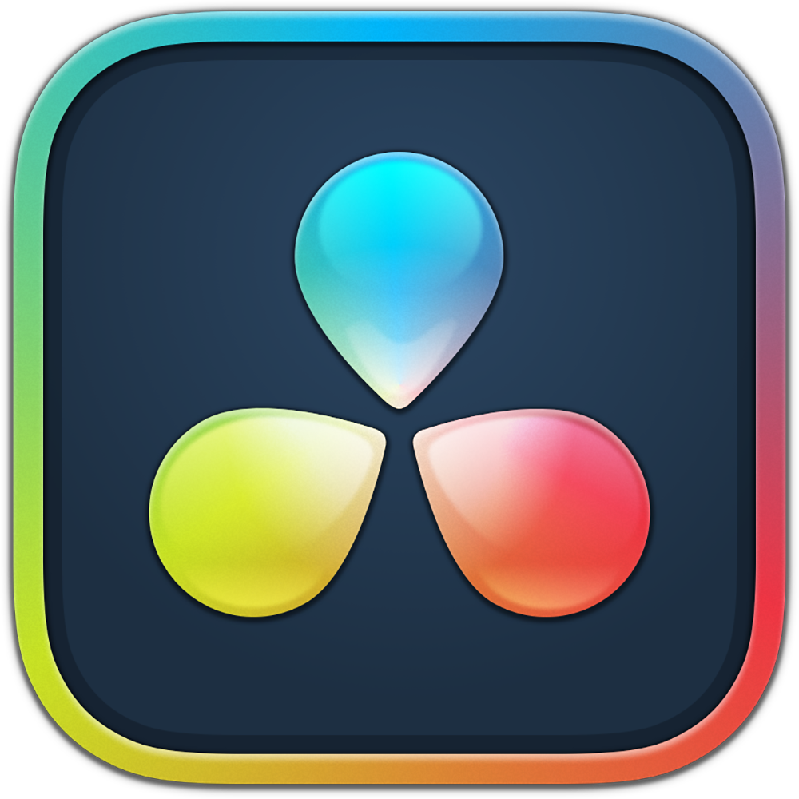

Jacob Weissenback
Junior UI / UX Designer
at Websline 15 Sep 2025 — Now
Design shapes the world. And I try to shape design.
Tools I work with
- Figma

- Illustrator

- Photoshop

- Lightroom Classic

- DaVinci Resolve Studio

- HTML5

- CSS3

- JavaScript

- Python

- Git
- GitHub
- GitLab

- Claude

My passions
- Piano
- Guitar
- Photography
- Videography
- Art
- Painting
- History
- Classical music
- Sport
- Gym
- Tennis
- Chess
- Computers
- Video games